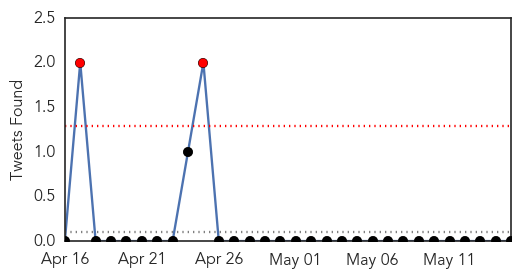
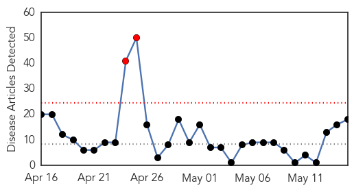

Influenza
30-Day Web Trend
30-Day Twitter Trend
2 alerts, 0 warnings

Article Locations


Article Confidences

Top Articles:
-
No articles found for May 15, 2014
Top Tweets:
-
No tweets found for May 15, 2014
Measles
30-Day Web Trend
2 alerts, 0 warnings

30-Day Twitter Trend
0 alerts, 0 warnings

Article Locations

Article Confidences
Top Articles:
- 0.999
- Second MERS case confirmed in Netherlands
- 0.999
- Second MERS case confirmed in Netherlands
- 0.990
- MERS outbreak becomes more urgent, WHO says - Panorama
- 0.987
- How U.S. Hospitals Are Planning To Stop The Deadly MERS Virus
- 0.986
- Outbreak in Ohio adds to 18-year high of measles cases in U.S.
- 0.985
- Containing a virus: AKU, Dow experts to help alleviate rubella
- 0.972
- Measles Outbreak Tied to Amish Missionaries as Number of Cases Rises Nationally — Charisma News
- 0.964
- Ohio measles outbreak spreads to record level
- 0.964
- Ohio measles outbreak spreads to record level
- 0.952
- Tennessee Department of Health investigating Measles Cases in Tennessee
- 0.915
- Is Pakistan losing the battle against measles?
- 0.901
- Measles vaccine appears to wipe out cancer cells in study
- 0.864
- Boston Officials Confirm MGH Treated Case Of Measles May 5 « CBS Boston
- 0.830
- Is Pakistan losing the battle against measles? - Pakistan
- 0.679
- What’s the real reason Britons aren't offered the chickenpox vaccine?
- 0.508
- Report on Health for the world’s adolescents released by WHO
- 0.505
- Woman’s cancer killed by measles virus in unprecedented trial
- 0.505
- Woman’s cancer killed by measles virus in unprecedented trial
Top Tweets:
-
No tweets found for May 15, 2014